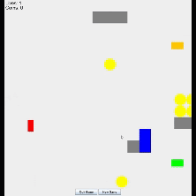
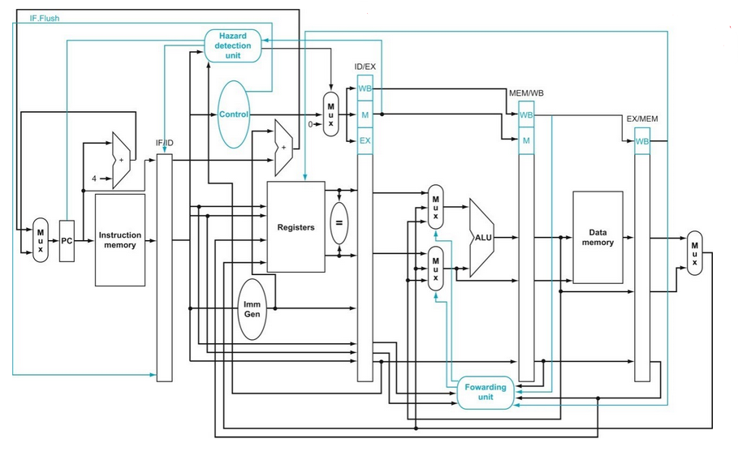
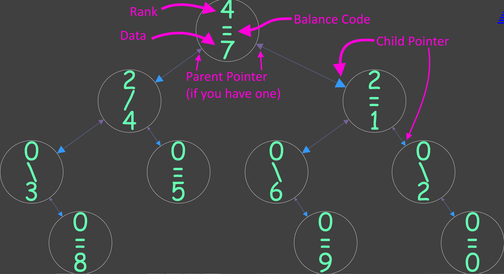

Jetpack Joyride Game
Object-Oriented Software Development
- Written in Java
- Worked with two other people to create a game similar to Jetpack Joyride

CPU
Computer Architecture 1
- Written in Verilog
- Used Verilog to simulate a CPU from around the 1970s

EditorTrees
Data Structures and Algorithm Analysis
- Written in Java
- Created an EditorTrees data type that could be used as the behind the scenes data structure for a text editor